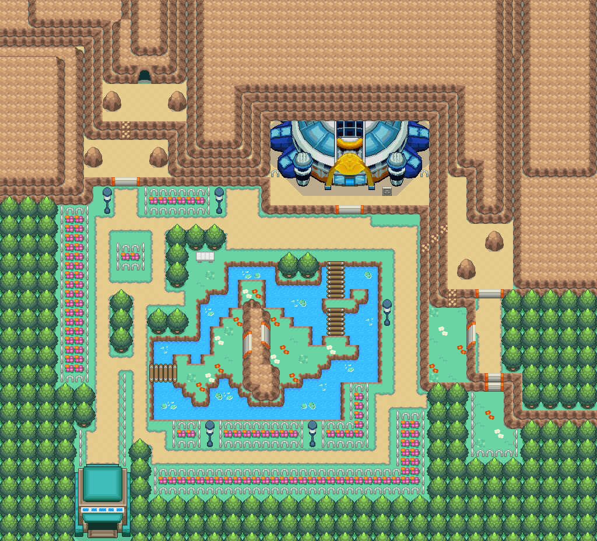
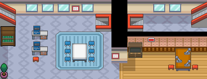

卡比丘
被称作卡比丘的神秘物品。
获取：缘朱市·商店 ／ 冠军之路(23,6) ／ 阿露福遗迹(21,18) ／ 呆呆兽之井(17,13) ／ 寂静之丘(6,12) ／ 寂静之丘(8,14) ／ 断崖通道(13,4) ／ 38号道路(27,25) ／ …等 24 处
用途
被称作卡比丘的神秘物品。 据说使用后会有意想不到的效果。
标价 5000 口袋：道具
获取方式
购买
地面隐藏
- 冠军之路（区域132） · (23,6) · 数量 1 · 地图｜静态图
- 阿露福遗迹（区域134） · (21,18) · 数量 1 · 地图｜静态图
- 呆呆兽之井（区域127） · (17,13) · 数量 1 · 地图｜静态图
- 寂静之丘（区域212） · (6,12) · 数量 1 · 地图｜静态图
- 寂静之丘（区域212） · (8,14) · 数量 1 · 地图｜静态图
- 断崖通道（区域198） · (13,4) · 数量 1 · 地图｜静态图
- 38号道路（区域163） · (27,25) · 数量 1 · 地图｜静态图
- 43号道路（区域168） · (10,9) · 数量 1 · 地图｜静态图
- 愤怒之湖（区域187） · (28,43) · 数量 1 · 地图｜静态图
- 51号水路（区域195） · (38,41) · 数量 1 · 地图｜静态图
- 龙穴（区域217） · (50,48) · 数量 1 · 地图｜静态图
- 不知名遗迹（区域209） · (28,3) · 数量 1 · 地图｜静态图
人物剧情
- 互动广场（区域216） · (48,19) · 与坐标处人物交互 · 数量 1 · 地图｜静态图 · 触发条件待补
- 火箭队基地（区域133） · (19,16) · 与坐标处人物交互 · 数量 1 · 地图｜静态图 · 触发条件待补
- 满金市（区域147） · (25,3) · 与坐标处人物交互 · 数量 1 · 地图｜静态图 · 触发条件待补
- 27号道路（区域202） · (155,13) · 与坐标处人物交互 · 数量 1 · 地图｜静态图 · 触发条件待补
- 23号公路（区域123） · (15,42) · 与坐标处人物交互 · 数量 1 · 地图｜静态图 · 触发条件待补
- 冠军之路（区域132） · (7,10) · 与坐标处人物交互 · 数量 1 · 地图｜静态图 · 触发条件待补
- 34号道路（区域159） · (29,89) · 与坐标处人物交互 · 数量 1 · 地图｜静态图 · 触发条件待补
- 桔梗市（区域145） · (51,4) · 与坐标处人物交互 · 数量 1 · 地图｜静态图 · 触发条件待补
- 缘朱市（区域148） · (3,9) · 与坐标处人物交互 · 数量 1 · 地图｜静态图 · 触发条件待补
- 擂钵山（区域99） · (33,33) · 与坐标处人物交互 · 数量 1 · 地图｜静态图 · 触发条件待补
- 漩涡岛（区域176） · (33,16) · 与坐标处人物交互 · 数量 1 · 地图｜静态图 · 触发条件待补
数据来源
- 来源文档：out/items.json（
/748） - 表索引 index 0748；内嵌 itemId 748；口袋 ITEMS (id=1)；type 2；hold_effect 0/0；importance 0；unk19 0
- 获取来源文档：encounters_research/out/shops.json、maps_research/out/events/events.json、maps_research/out/scripts/scripts.json
- 获取记录 ID：
shop:08D562D6:0:55:5、hidden:1:41:1、hidden:1:47:6、hidden:1:94:0、hidden:1:100:1、hidden:1:106:0、hidden:1:107:0、hidden:3:91:6、hidden:3:99:4、hidden:3:100:5、hidden:3:104:0、hidden:54:2:1、hidden:56:21:3、script_item_candidate:std:087B2F9D:51:10、script_item_candidate:std:087BB0AD:56:46、script_item_candidate:std:087BCF28:53:15、script_item_candidate:std:087BE12B:3:81、script_item_candidate:std:087BEC4C:3:42、script_item_candidate:std:087BEC80:1:40、script_item_candidate:std:08EC5719:3:88、script_item_candidate:std:08EEC549:3:68、script_item_candidate:std:08F5BBB9:55:34、script_item_candidate:std:08F5E5AF:55:13、script_item_candidate:std:09CD0877:55:15 - 说明文字解码来源：
reference/SAVE_HOME_GAME_DATA.json.charmap
相关支线
任务可能要求携带本条目，或将其作为奖励；具体用途见任务步骤。
地点地图
共享RGB底图；点击可缩放定位。数字对应本页相关地点，不代表地图上全部事件。


展开其余 18 张地点地图
断崖通道

1 卡比丘（13,4）
38号道路


1 卡比丘（27,25）
43号道路

1 卡比丘（10,9）
愤怒之湖

1 卡比丘（28,43）
51号水路

1 卡比丘（38,41）
龙穴

1 卡比丘（50,48）
不知名遗迹

1 卡比丘（28,3）
互动广场

1 卡比丘（48,19）
火箭队基地

1 卡比丘（19,16） 底图有5个图块缺少原始数据。
满金市

1 卡比丘（25,3）
27号道路

1 卡比丘（155,13）
23号公路

1 卡比丘（15,42）
冠军之路

1 卡比丘（7,10）
34号道路

1 卡比丘（29,89）
桔梗市


1 卡比丘（51,4）
缘朱市

1 卡比丘（3,9）
擂钵山

1 卡比丘（33,33）
漩涡岛

1 卡比丘（33,16）